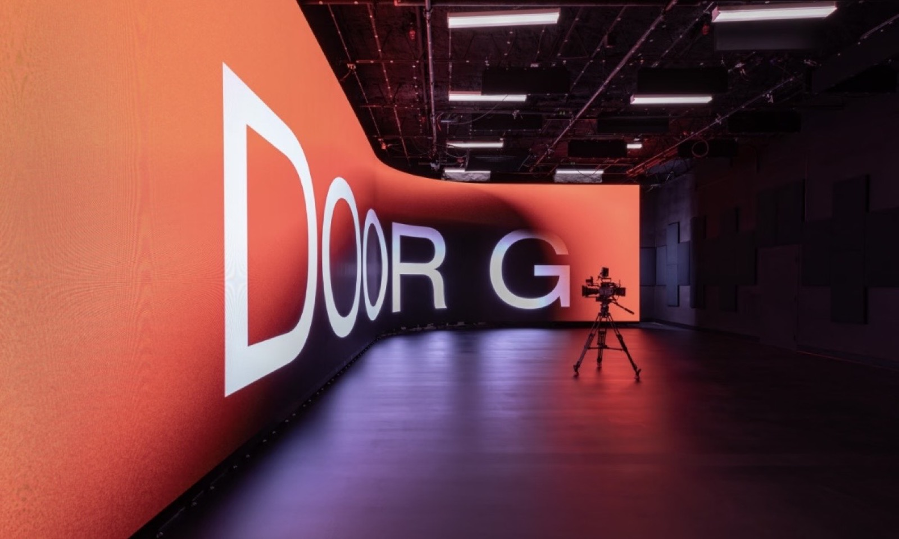
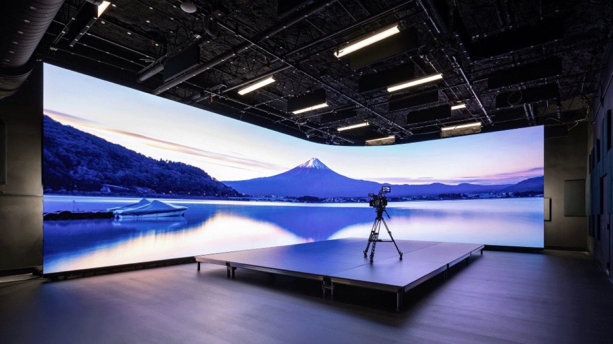
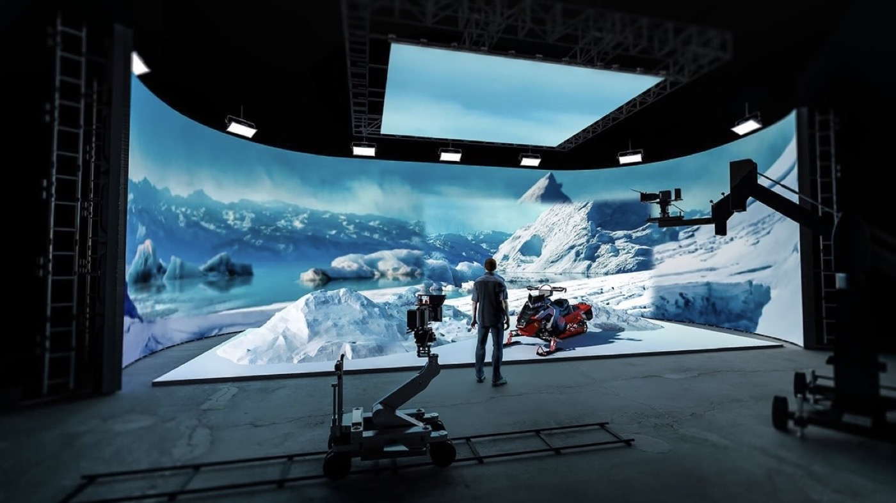

By David
What should an XR LED wall meet for virtual production? An XR LED wall must hold a stable image to the camera, which means a high refresh rate and correct scan behaviour, a wide colour gamut and even calibration, and a pixel pitch fine enough to avoid moire at the shooting distance. This 2026 guide explains the camera-side specifications and the practical rental and build constraints for an XR stage or LED volume.
A virtual production stage replaces the green screen with a large LED wall that shows the environment live, so the camera captures the background in frame. The foreground actors and props stand in front of the wall, and the wall becomes the lighting and the backdrop at once. The result is called in-camera VFX, because the final background is recorded on set rather than added later.
This XR LED wall guide is written for XR and film production companies, virtual production stages, and rental houses. It covers what the camera sees: the refresh rate and scan behaviour, the colour gamut and colour accuracy, the moire risk and pixel pitch, and the practical rental and build constraints that decide whether a wall is shootable.
On an XR or virtual production stage, the LED wall is both the backdrop and a light source. The actors are lit by the wall itself, so the wall's colour and brightness directly affect the skin tones and the shadows on set. A wall that is bright enough and colour-accurate enough makes the on-camera composite believable; a wall that is not makes the shot look artificial.
The wall runs in sync with the camera tracking system, so the rendered environment moves with the camera and the parallax looks correct. This is different from a simple screen showing a static image. For a wider view of how large-format LED walls are used across industries, see our guide to immersive LED trends in 2026.
Because the camera frames the wall directly, every specification that a normal video display treats as optional becomes critical on a virtual production stage. The camera is a far stricter viewer than the human eye, and it exposes problems the eye ignores.
The refresh rate is the specification that most often decides whether a wall is usable on camera. A camera does not capture the whole frame at one instant; it reads the image row by row as the shutter exposes. If the wall refreshes slowly, or if its scan pattern does not suit the camera's read-out, the wall shows banding, flicker, or a rolling dark bar in the recorded frame.
For virtual production, refresh rates are commonly discussed in the thousands of hertz, well above the rate of a normal display, because the wall must complete several refreshes within the camera's shutter window. The exact figure is matched to the camera's frame rate and shutter angle. This is an industry-common range, not a claim about any single product, and the right value is set on the shoot day with the camera in hand.
Scan rate and scan mode matter as well. A wall that scans in a pattern misaligned with the camera produces a visible dark band. Modern stages choose high-refresh drivers and test them against the actual camera before the shoot, because a wall that looks clean to the eye can still band on screen.
| Camera-Side Spec | What It Controls | Why It Matters On Set |
|---|---|---|
| Refresh rate | Flicker and banding in frame | Camera reads rows faster than a normal display |
| Scan mode | Dark band and rolling bar | Must suit the camera's read-out pattern |
| Colour gamut | Skin tones and sky accuracy | The wall lights the actors as well as the backdrop |
| Grey scale and low-end | Shadow detail in dark scenes | Poor low-grey handling crushes the shadows |
| Pixel pitch | Moire risk from the lens | A pitch too coarse shows a pattern in frame |
The colour gamut is the range of colours the wall can show. A virtual production wall must cover a wide gamut, because it is both the background and the light. If the wall cannot reproduce the saturated colours of a sky or a neon sign, the environment looks flat. If its whites are off, the skin tones shift.
Colour accuracy is the second half. A wall with a wide gamut but poor calibration shows inconsistent colour across the panels, and the camera records the seams as patches of different colour. The stage should calibrate the wall so the colour is even across the whole surface at the camera's exposure.
Low-grey performance is often overlooked. Dark scenes depend on the wall showing deep but detailed shadows. A wall that crushes the low end loses the shadow detail the environment was built to show, and the shot looks muddy.
Moire is the interference pattern that appears when the camera's sensor grid and the wall's LED grid beat against each other. It shows as a wavy or coloured pattern in the recorded image, and it is the reason pixel pitch is chosen for the shooting distance rather than for the eye. A finer pitch reduces the risk, but the lens, the distance, and the focus also decide it.
Pixel pitch is the distance between LEDs. A finer pitch shows less structure at close range, which suits a wall the camera frames tightly. A coarser pitch is cheaper and fine for a wall seen at a distance or deliberately out of focus. The stage should set the pitch for the tightest shot it plans to take, because that is the shot most likely to reveal the pattern.
Moire cannot always be removed by the wall alone. The lens choice, the aperture, and the camera's anti-alias filter all affect it. A proper stage tests the wall with the actual lens package before the shoot, so the pattern is found and solved before the crew arrives.
Not every LED wall suits a volume stage. The wall must be rigid enough to hold its alignment, cabitable enough to build a curved volume, and quiet enough for a sound stage. A wall built for rental and touring, with fast assembly and a consistent colour, usually fits a volume better than a fixed-installation wall. For walls that need a fine pitch for close camera work, the COB small-pitch range such as the COB ZH series is one option to consider.

A volume stage wraps the set in LED panels, often on a curve, so the panels must join with fine seams and match in colour from one cabinet to the next. Blemishes that a single wall would hide become visible when the wall sweeps around the set.
At Asia Vision, a Shenzhen LED display manufacturer, the in-house cabinet customisation and ageing test let a stage specify the cabinet, the curve, and the mounting for the volume. The factory supports SMD, GOB, and COB, runs twelve COB production lines, and has COB P0.93 in mass production, which suits the fine-pitch sections of an XR stage.
Most virtual production walls are rented, and rental adds constraints a fixed installation does not face. The wall must be shipped in cases, built quickly, and struck quickly. Cabinets that are heavy or fragile slow the build and raise the crew cost. A rental-grade cabinet with a fast lock and a rugged frame keeps the day on schedule.

The stage itself imposes constraints. Power and data must reach every panel, the floor must carry the load, and the wall's height and curve must fit the volume. The build plan, the power plan, and the wall specification have to be designed together, because a wall that does not fit the stage is useless however good its specifications.
The rental also brings a service question. A dead panel on a shoot day is a lost shot, so the rental must carry spares and a fast way to replace a module. A stage that plans the spares and the access before the shoot avoids the delay that a failure would cause. Asia Vision backs its walls with a two-year warranty and 24-hour support, and its export and QC process covers the delivery to the stage.
An XR wall is only as reliable as the crew that runs it. The technicians must know the wall's calibration, its driver settings, and its scan behaviour, because a wrong setting on the shoot day can band the whole frame. Our guide to LED display crew training covers what a stage crew needs to know.
Spares should travel with the wall, including spare modules, receiving cards, and power supplies, matched in colour to the rest of the wall. A spare that is a slightly different colour shows up on camera, so the spares must come from the same batch or be calibrated to match.
Access matters on a curved volume. A module that cannot be reached without dismantling the curve turns a small fault into a long stop. The stage should confirm that every section of the wall can be serviced from a walkway or a lift.
A camera-ready XR LED wall specification states the refresh rate, the scan mode, the colour gamut and calibration, the low-grey performance, the pixel pitch for the shooting distance, and the cabinet for the volume. It also states the driver, the receiving card, and the processing, because these decide the sync with the camera and the tracking system.
The specification should require a camera test, not only a data sheet. The wall must be tested with the actual camera, the actual lens, and the actual frame rate and shutter, because a wall that passes on paper can still band on screen. The camera test is the proof that the specification works.
The buyer should also require a colour calibration report and a consistent batch, so the wall matches itself from panel to panel and matches any future spare. On a volume stage, a colour mismatch is as visible as a dead panel.
The common mistakes are a refresh rate too low for the camera, a scan mode that bands, and a colour gamut too narrow for the environment. Others include a pixel pitch too coarse for the shooting distance, poor low-grey handling, and spares that do not match the wall in colour. Each shows up in the recorded frame, where it cannot be fixed later.
The remedy is to test the wall with the camera, specify the colour and the pitch for the shoot, and plan the spares and the access. A virtual production wall is judged by the frame, not by the data sheet, so the camera test is the final measure.
| Scenario | XR LED Wall Priority |
|---|---|
| Close camera work | Fine pixel pitch, high refresh |
| Wide volume, actor lit by wall | Wide gamut, even calibration |
| Dark interior scene | Clean low-grey, no crush |
| Fast rental build | Rental-grade cabinet, spares |
On the shoot day, the wall's settings are matched to the camera before the first take. The refresh rate, the scan mode, and the shutter are set together, and the wall is checked on a monitor for banding. This setup takes time and should be planned into the schedule, not rushed on the day.
The content the wall plays is part of the specification too. The environment is usually pre-rendered or run in real time, and it must suit the wall's gamut and brightness. A scene built for a cinema screen may not fit a wall that lights the actors, so the content and the wall are planned as one system.
An XR LED wall must hold its image to the camera, light the actors, and fit the stage, the schedule, and the budget. Specify the refresh rate, the colour, the pitch, and the cabinet for the shoot, test with the camera, and the wall will deliver the in-camera background the production needs.
Buyers who treat the XR LED wall as a camera instrument, not a screen, get the frame they planned. The wall is the environment, the light, and the backdrop at once, and the specification decides whether the shot holds together.
Tell us your camera, your shooting distance, and your stage, and we will specify the refresh rate, colour, and pixel pitch for your XR LED wall.
Request XR Wall SpecChat on WhatsApp